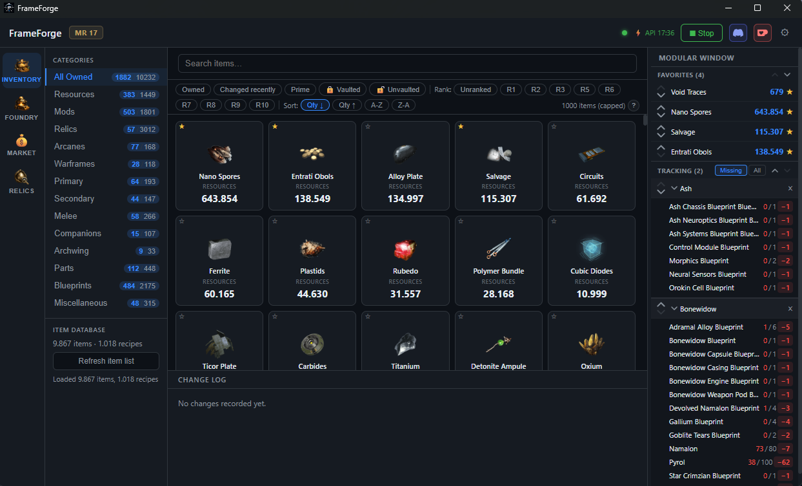
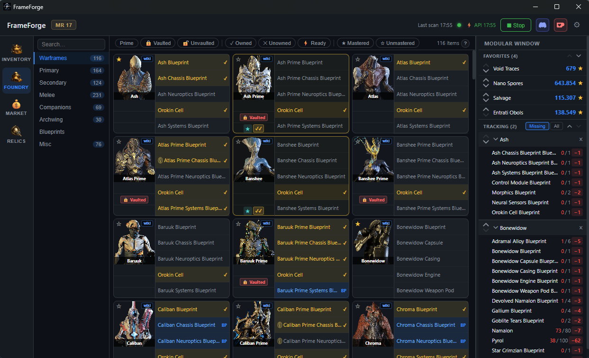
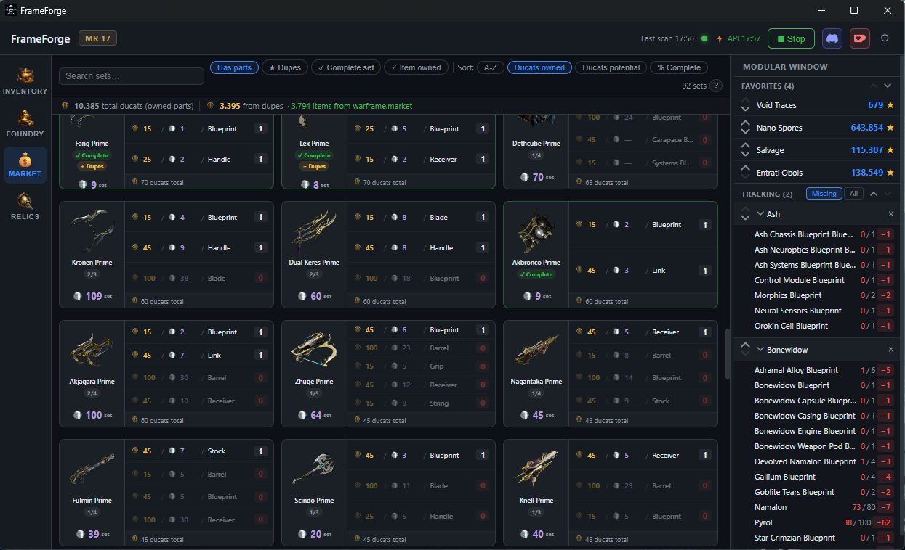
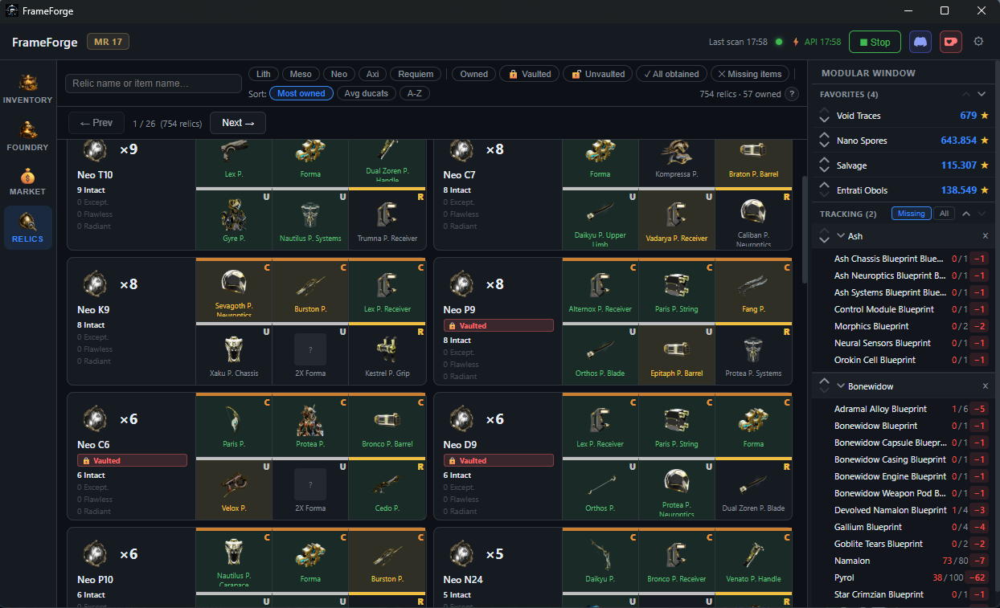
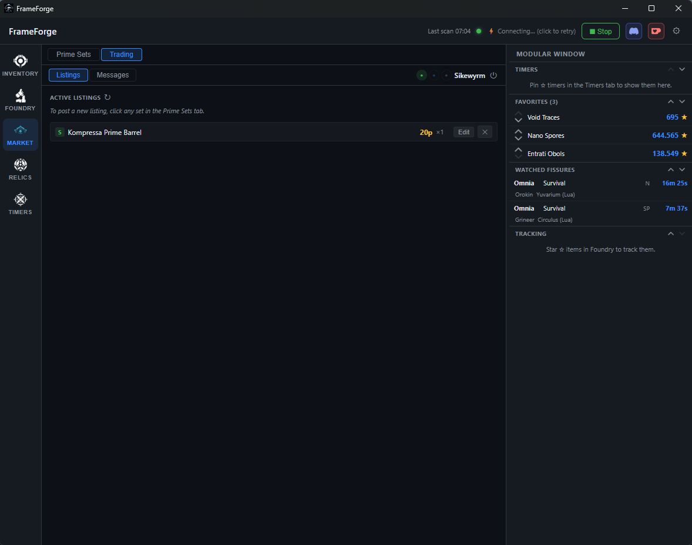
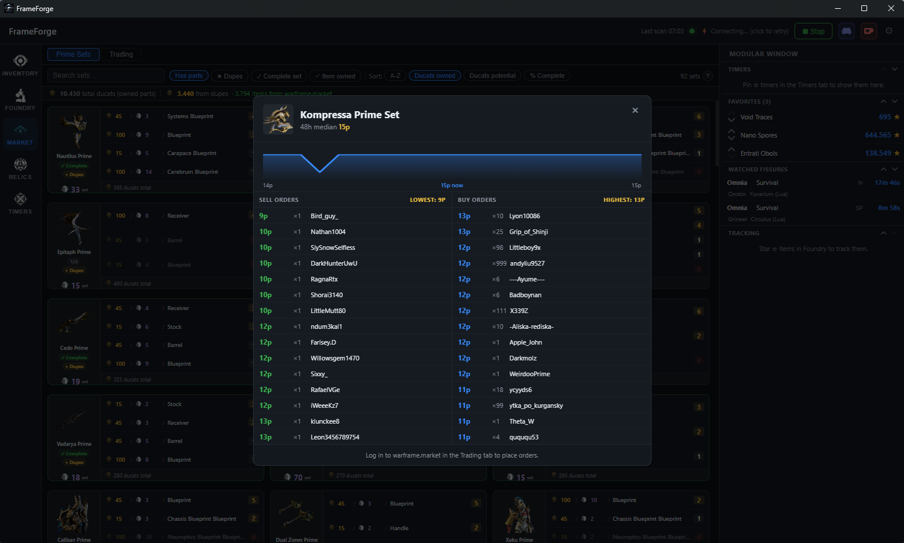
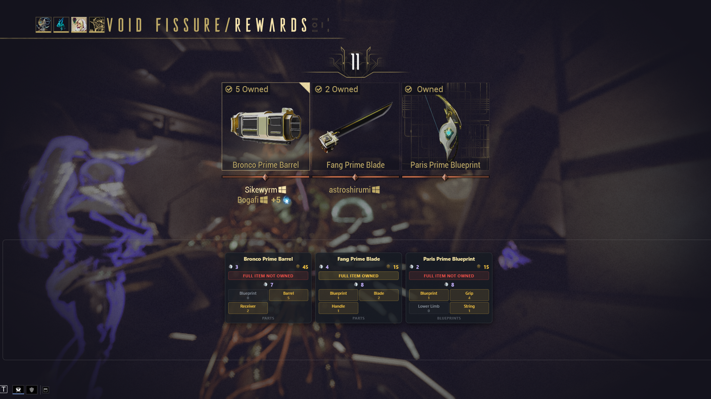

Your Warframe companion,
built for Tenno.
A desktop companion for Warframe that shows your live inventory, tracks crafting recipes, manages your warframe.market trading, runs a live timer dashboard, and auto-detects relic reward screens — all free, all open source.
Free and open source. No account required for most features.

Everything you need to forge your arsenal
FrameForge runs alongside your game and keeps you informed — no manual entry, no spreadsheets.
Live Inventory
13 categories — resources, mods, arcanes, relics, weapons, Warframes, companions and more. Read directly from the game's memory every 10 seconds — no account or login required. An optional Warframe Companion API connection can be enabled in Settings for additional detail such as mod ranks, but the app works fully without it. A built-in change log tracks every quantity delta with timestamps.
Foundry
Browse every craftable item with full ingredient trees. Components are colour-coded by status — owned, blueprint only, or missing — with relic source icons for anything you can farm right now.
OCR Reward Overlay
When a void fissure reward screen opens, FrameForge automatically reads all four cards and overlays platinum price, ducat value, set completion, and a recommended pick — without leaving the game.
Market Helper
Browse every Prime set with live platinum prices from warframe.market, ducat values per part, and a set completion tracker. Click any set or part to open a live order popup with current sell/buy orders, a 3-week price history chart, and a one-click listing form.
Trading
Log in to warframe.market to manage your active listings, post new sell and buy orders directly from any prime set, receive incoming trade whispers in-app, and set your online status — all without leaving FrameForge.
Relic Helper
See exactly what each relic can drop, colour-coded by rarity, with your ownership status and platinum value for every reward slot — so you always know which relics are worth running.
Statistics
Automatically track every trade you make — in-game trades are detected from the game log the moment they complete, warframe.market trades are logged when you click Sold. The Reports view shows platinum earned and spent over time, your most profitable items, average sale prices, top trading partners, and a daily bar chart of trade activity. Filter by Today, 7 Days, 30 Days, 90 Days, Year to Date, 1 Year, or All Time.
Timers
Live countdowns for world cycles, bounties, daily and weekly resets, Sortie, Archon Hunt, The Circuit, Deep Archimedea, Baro Ki'Teer and Prime Resurgence (both with expandable inventories), Nightwave, Darvo deal, alerts, invasions, and all active void fissures across Normal, Steel Path, and Void Storm tabs. A fissure watch system highlights matching fissures and surfaces them in the Modular Window.
See it in action






Click any prime set or part to open the live order book with current prices, a 3-week history chart, and a one-click listing form.

OCR overlay appears automatically when a void fissure reward screen opens — no alt-tab needed.
Simple by design
Get started in seconds.
Download and install
Download the latest release and run the installer. No configuration needed.
Use it — game optional
Inventory scanning requires Warframe to be running. All other features — Foundry, Market Helper, Relic Helper, and Timers — work fully without the game.
Return to your Orbiter
Inventory updates automatically every 10 seconds while the app is running.
Ready to forge?
Download FrameForge for Windows — free, open source, no account required.
Windows 10 / 11 · Free & open source under GPLv3